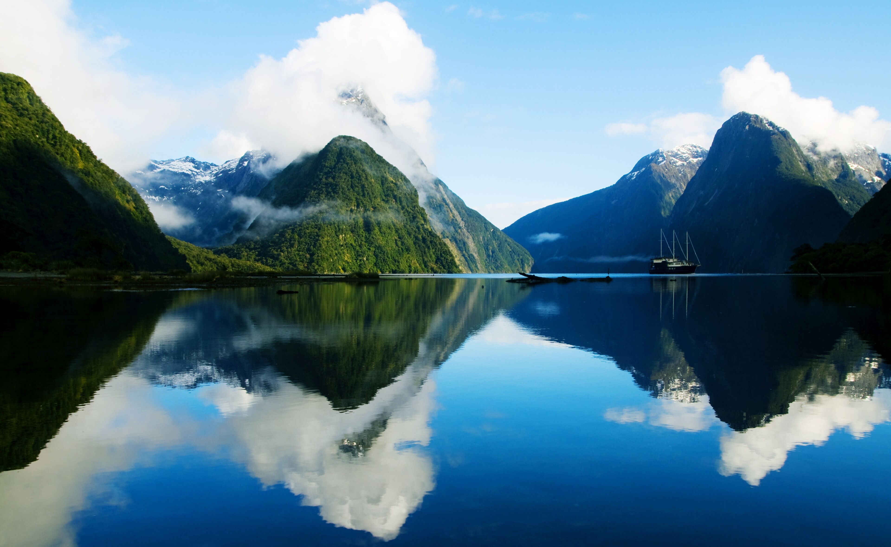

Green-lipped Mussels
A New Zealand native, usually steamed and served simply with garlic butter or a white wine broth.
Read more about mussels
NZ Travel Guide.
From glowworm caves to glacier lakes, get everything you need to travel New Zealand with confidence.
Get StartedDiscover must-see destinations across the North and South Islands, from geothermal Rotorua to the fiords of Milford Sound.
Explore scenic spotsFind authentic souvenirs, from Maori-carved pounamu to premium merino wool.
Explore shoppingOften called the eighth wonder of the world, Milford Sound's sheer cliffs, cascading waterfalls, and resident wildlife make it the single most unforgettable stop on any South Island itinerary.

A New Zealand native, usually steamed and served simply with garlic butter or a white wine broth.
Read more about mussels
A crisp meringue dessert topped with whipped cream and fresh fruit — a staple at Kiwi celebrations.
Read more about pavlova